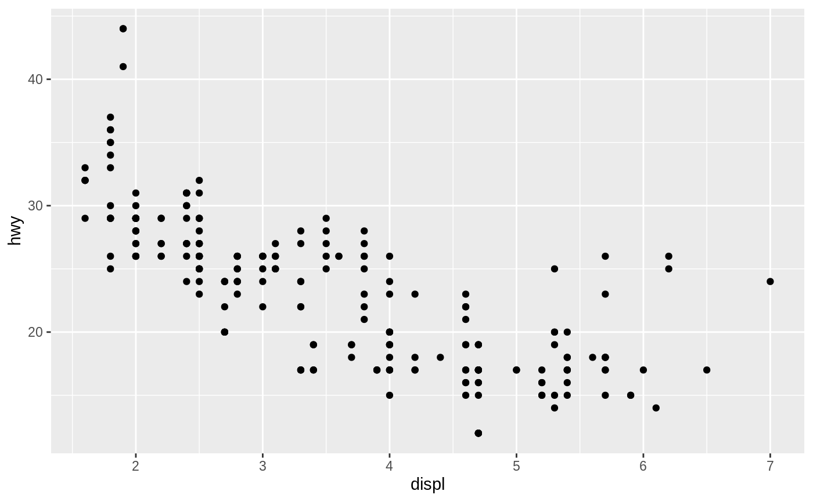
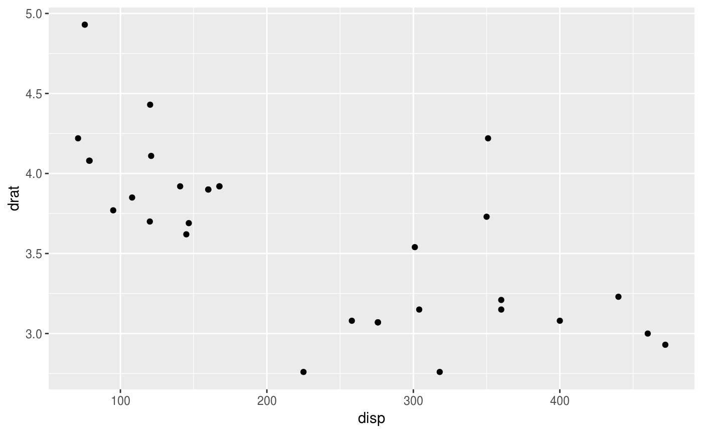
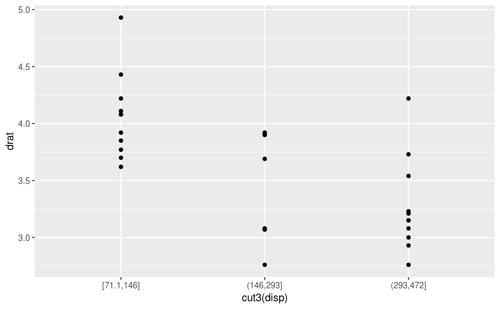

Aesthetic mappings describe how variables in the data are mapped to visual
properties (aesthetics) of geoms. Aesthetic mappings can be set in
ggplot2() and in individual layers.
aes(x, y, ...)
Arguments
| x, y, ... | List of name value pairs giving aesthetics to map to variables. The names for x and y aesthetics are typically omitted because they are so common; all other aesthetics must be named. |
|---|
Value
A list with class uneval. Components of the list are either
quosures or constants.
Details
This function also standardises aesthetic names by converting color to colour
(also in substrings, e.g. point_color to point_colour) and translating old style
R names to ggplot names (eg. pch to shape, cex to size).
Quasiquotation
aes() is a quoting function. This means that
its inputs are quoted to be evaluated in the context of the
data. This makes it easy to work with variables from the data frame
because you can name those directly. The flip side is that you have
to use quasiquotation to program with
aes(). See a tidy evaluation tutorial such as the dplyr programming vignette
to learn more about these techniques.
See also
vars() for another quoting function designed for
faceting specifications.
Examples
aes(x = mpg, y = wt)#> Aesthetic mapping: #> * `x` -> `mpg` #> * `y` -> `wt`aes(mpg, wt)#> Aesthetic mapping: #> * `x` -> `mpg` #> * `y` -> `wt`# You can also map aesthetics to functions of variables aes(x = mpg ^ 2, y = wt / cyl)#> Aesthetic mapping: #> * `x` -> `mpg^2` #> * `y` -> `wt/cyl`# Or to constants aes(x = 1, colour = "smooth")#> Aesthetic mapping: #> * `x` -> 1 #> * `colour` -> "smooth"# Aesthetic names are automatically standardised aes(col = x)#> Aesthetic mapping: #> * `colour` -> `x`aes(fg = x)#> Aesthetic mapping: #> * `colour` -> `x`aes(color = x)#> Aesthetic mapping: #> * `colour` -> `x`aes(colour = x)#> Aesthetic mapping: #> * `colour` -> `x`# aes() is passed to either ggplot() or specific layer. Aesthetics supplied # to ggplot() are used as defaults for every layer. ggplot(mpg, aes(displ, hwy)) + geom_point()# Tidy evaluation ---------------------------------------------------- # aes() automatically quotes all its arguments, so you need to use tidy # evaluation to create wrappers around ggplot2 pipelines. The # simplest case occurs when your wrapper takes dots: scatter_by <- function(data, ...) { ggplot(data) + geom_point(aes(...)) } scatter_by(mtcars, disp, drat)# If your wrapper has a more specific interface with named arguments, # you need "enquote and unquote": scatter_by <- function(data, x, y) { x <- enquo(x) y <- enquo(y) ggplot(data) + geom_point(aes(!!x, !!y)) } scatter_by(mtcars, disp, drat)# Note that users of your wrapper can use their own functions in the # quoted expressions and all will resolve as it should! cut3 <- function(x) cut_number(x, 3) scatter_by(mtcars, cut3(disp), drat)